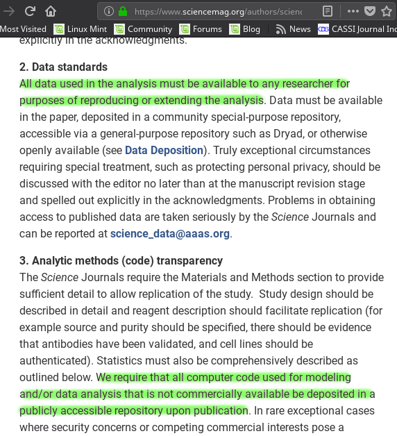
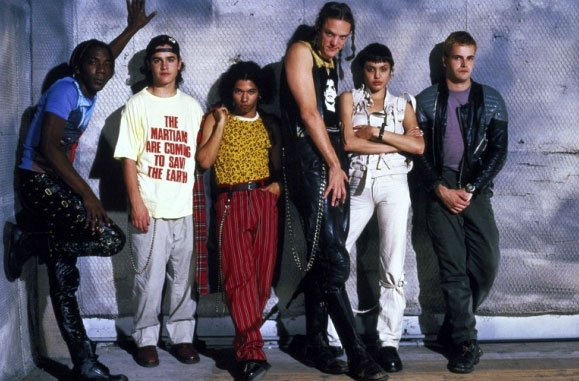
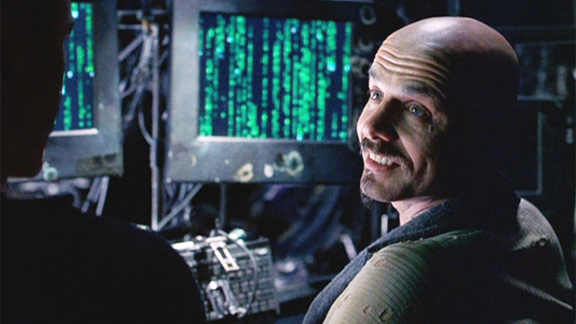

Open science and sustainable software
Adam J. Jackson
adam.jackson@ucl.ac.uk
Open Science
Open Science
Open Science is scholarly research that is collaborative, transparent and reproducible and whose outputs are publicly available.
- In science we are usually building on previous work
- It sucks when we can't access that work!
- Papers
- Data
- Models
- For our funders, this is inefficient
- UKRI (body including EPSRC, AHRC, Innovate UK, STFC…) expects that articles funded by research councils will be freely available online
EPSRC requires a Data Access Statement in publications
… publicly funded research data should generally be made as widely and freely available as possible in a timely and responsible manner
Some vocab
- N 'R's (where N is 2, 3, 4 or 5)
- Rerun (same people, tinker with setup)
- Repeat (same people, same setup)
- Replicate (different people, same setup)
- Reproduce (different people, different setup)
- Reuse (similar setup, different experiment)
- Some other presentations on this topic
Less vocab
- Reproducible outputs
- Improve quality of research
- Reusable outputs
- Improve efficiency of research
Reproducibility
- Provide sufficient information for others to reproduce results
- This should be the minimum standard for a scientific paper…
- In practice it's not easy!
Re-use
- Data sharing practices vary pretty wildly between fields
- Some fields rely heavily on shared databases
- Obtaining paper results by email has mixed results
FAIR
Principles for "scientific data management" https://www.nature.com/articles/sdata201618
- Findable
- Use persistent identifier
- Use metadata
- Available
- Retrievable by an open standard protocal
- Interoperable
- Format data in a formal, accessible way
- Reusable
- "richly described" and using community standards
- Usage license and detailed provenance
Journal policies
- In response to research council pressure, journals are requiring more
Science data/code availability policy (2011)
All data necessary to understand, assess, and extend the conclusions of the manuscript must be available to any reader of Science. All computer codes involved in the creation or analysis of data must also be available to any reader of Science. After publication, all reasonable requests for data and materials must be fulfilled. Any restrictions on the availability of data, codes, or materials, including fees and original data obtained from other sources (Materials Transfer Agreements), must be disclosed to the editors upon submission…
In a recent study researchers requested data and code from a random sample of 204 Science papers…
When you approach a PI for the source codes and raw data, you better explain who you are, whom you work for, why you need the data and what you are going to do with it.
I have to say that this is a very unusual request without any explanation! Please ask your supervisor to send me an email with a detailed, and I mean detailed, explanation.
Thank you for your interest in our paper. For the [redacted] calculations I used my own code, and there is no public version of this code, which could be downloaded. Since this code is not very user-friendly and is under constant development I prefer not to share this code.
R is a free software package available at www.r-project.org/ I used R for the [redacted] models. As you probably know, [redacted] and [redacted] are quite complicated. But I don’t have to tell you that given that you are a statistics student! I used Matlab for the geometry.
The policy has been tweaked, but was that really the problem?

Good practice
- Keep raw data
- Keep metadata
- Avoid proprietary data formats
- Automate everything
- Host it somewhere
- Code: Github, Bitbucket, Gitlab…
- Data: Zenodo, Figshare, institutional repo, publisher…
Sustainable Software
Research software
- 92% of academics use research software
- 69% say that their research would not be practical without it
- 56% develop their own software
- (worryingly, 21% of those have no training in software development)
(Simon Hettrick, Deputy Director of SSI) https://www.software.ac.uk/blog/2014-12-04-its-impossible-conduct-research-without-software-say-7-out-10-uk-researchers

- Supporting research software community in the UK
- "Better software, better research"
- Training (partnership with Software Carpentry)
- Advocacy/policy (Research Software Engineers)
- Fellowship programme (this includes most of today's speakers!)
Spreadsheets are software
Spreadsheets are (terrible) software
Spreadsheets are (terrible) software
- Mix data and processing
- Data cells and code cells look the same
- Errors can be hard to spot even in influential studies
Open Source
- Many programming languages (C, C++, Fortran, …) are translated (compiled) to machine code
- Software that is distributed as a machine code "binary" cannot easily be inspected
- Reading machine code is serious hacker territory

Hackers (1995)

The Matrix (1999)
- Open Source means that the code can be examined as written
- Some programs (e.g. Python, shell scripts) are not compiled before they are run
- The source can always be examined
- Open source in a literal sense helps reproducibility:
- exact process is exposed
- implementation details can be identified/test/replicated
- including bugs!
- Open source is not enough! Licensing matters.
- "Free Open Source Software (FOSS)" is
- Free as in beer (gratis)
- Free as in Freedom (libre)

If the users don't control the program, the program controls the users. With proprietary software, there is always some entity, the "owner" of the program, that controls the program and through it, exercises power over its users. A nonfree program is a yoke, an instrument of unjust power.
– Richard Stallman
Politics aside…
- FOSS licenses give us the right to build on software and distribute it ourselves
- This is essential for community development of a codebase
- In practice good changes can make it "upstream" or form a new code
- Hybrids are possible: paid academic license, community development
Sustainable software
Sustainable software is maintainable
- Coding style
- Version control
- Documentation
- Testing
- License
- Enable contributions
Documentation
Documentation is the most important thing not on today's agenda
Watch Daniele Procida's amazing talk about documentation
- Pycon video: https://www.youtube.com/watch?v=azf6yzuJt54
- Blog version https://www.divio.com/en/blog/documentation/
The secret method for a professional-looking project
- Steal stuff you like from other projects
- Watch the issue tracker or mailing list of a project you care about and see how it develops
- Use the same toolchain as projects you find easy to work with and copy their configurations
Wrap-up
Summary
- Publicly-funded science wants to be open
- Working openly is good for quality
- Always keep raw data
- Use standard formats
- Automate things
- Make stuff useable by other people
- You'll thank yourself for that in a year's time